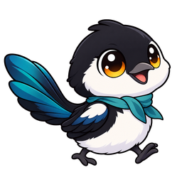
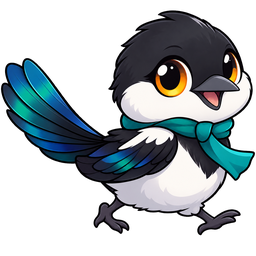
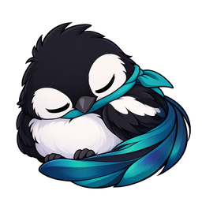
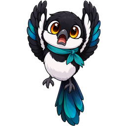
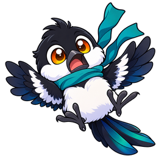
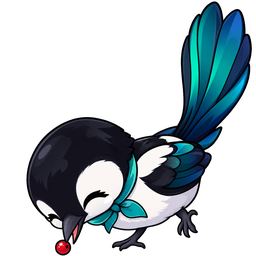
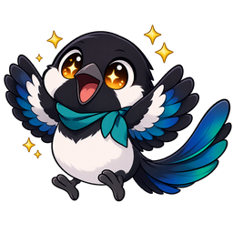
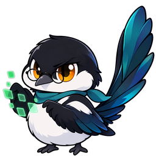
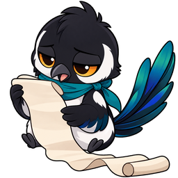
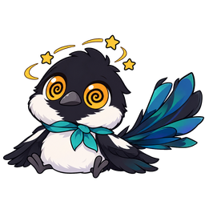

Qwpie - Taskbar Magpie
Qwen 4 picked a magpie: a curious collector of shiny things.
Сорока, которая собирает блестящие находки из буфера обмена.
Windows app · Программа для Windows
This page shows the original sprites. The desktop pet runs in Electron on Windows.
Здесь показаны готовые спрайты. Сам питомец запускается на Windows через Electron.
Install Node.js LTS, extract the ZIP, then run npm install and npm start in its folder. The first command downloads Electron. No API key or image generation is needed.
Питомец читает новые тексты из буфера обмена локально для реакций. Меню в трее: покормить, уснуть, проснуться, выйти. Для запуска не нужен API-ключ.
11 original poses · 11 готовых поз










